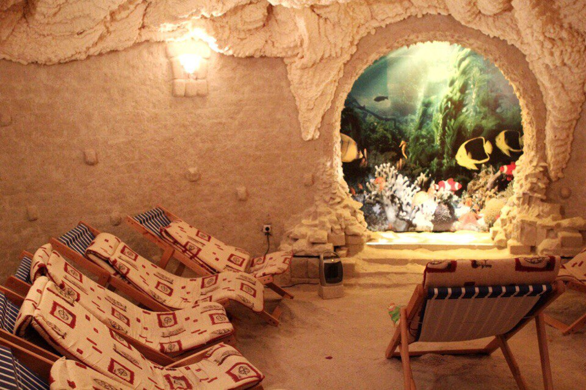
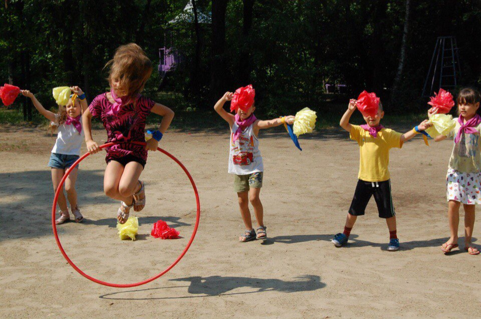
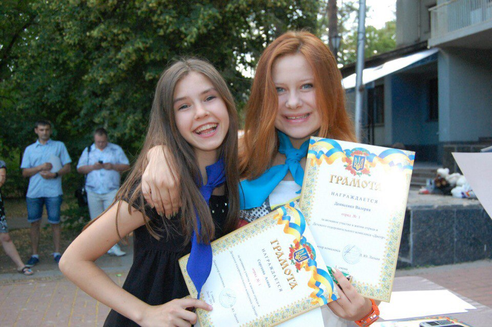
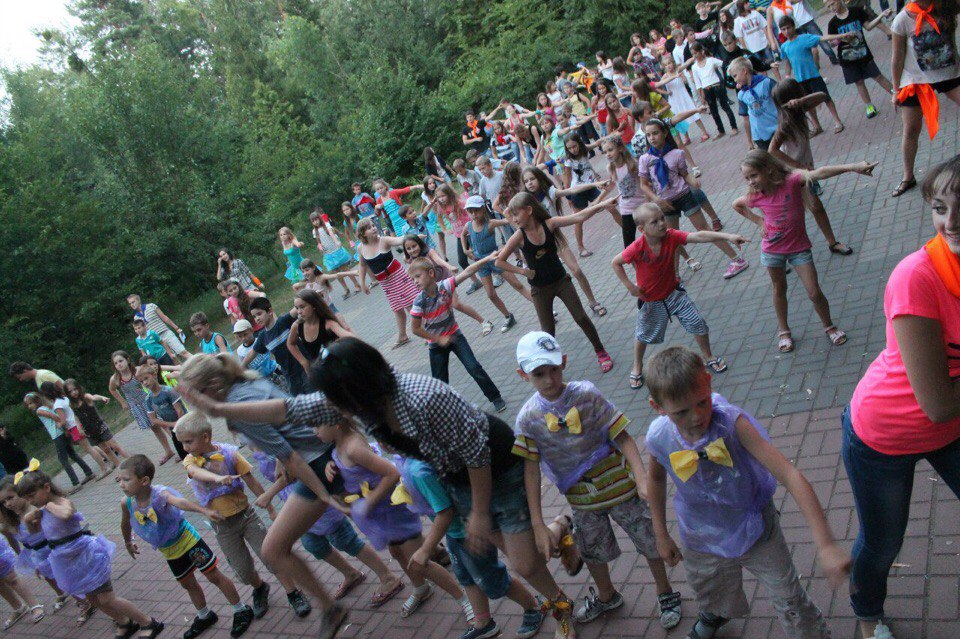
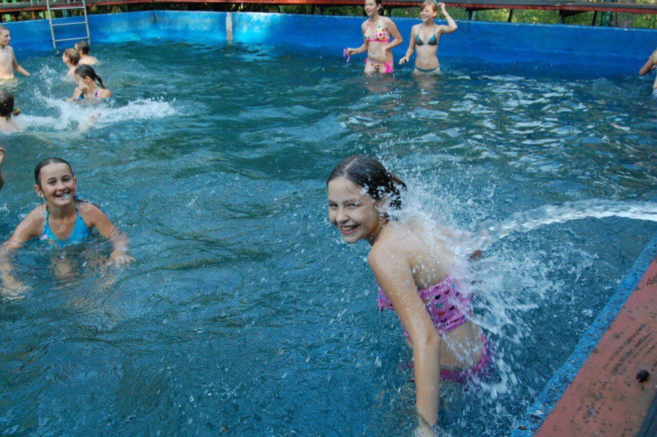
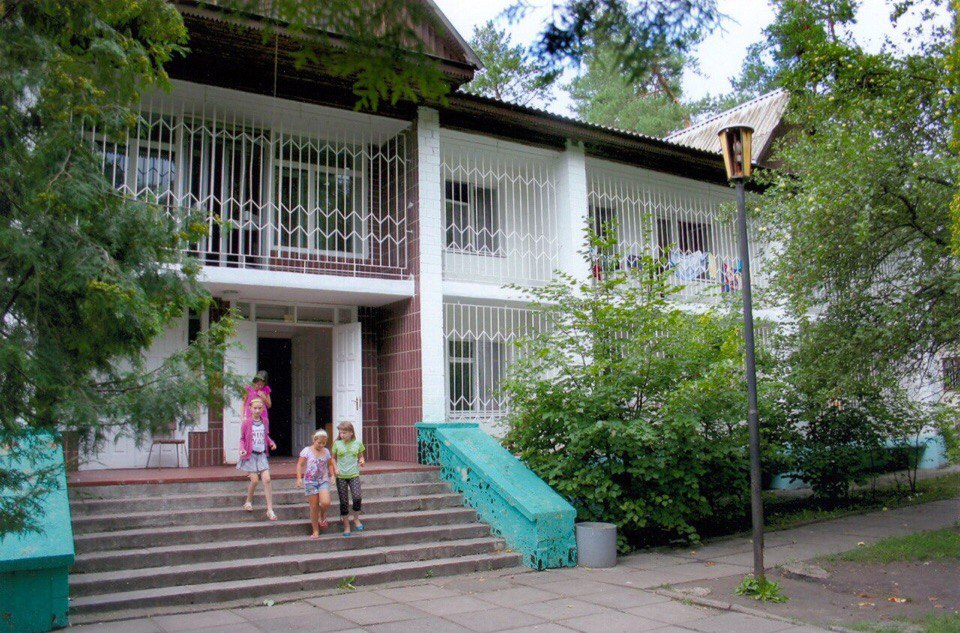
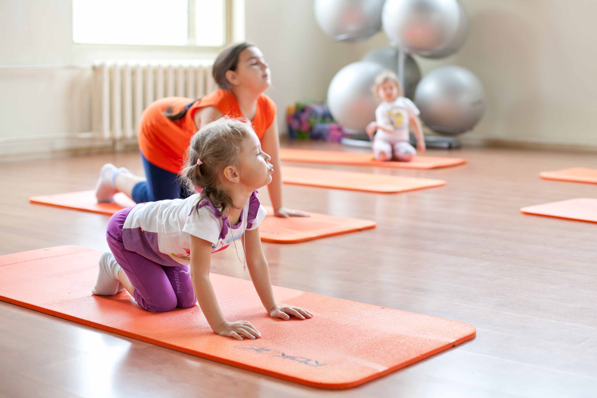

О нас



Детский оздоровительный центр « Днепр» расположенный в районе Конча - Заспа недалеко от пгт. Козин. Мы находимся в экологически чистой зоне, в лесной местности.
Наша цель – сделать отдых Вашего ребенка интересным, веселым, а главное – полезным. У детей есть возможность посещать кислородные терапии, массажный кабинет и занятия ЛФК .
Нашим юным отдыхающим всегда есть чем заняться : спортивные занятия разных видов, искусство, кружки иностранного языка, конкурсы, квесты и много – много других увлекательных вещей.
Основой каждого отдыха есть , конечно, питание, про которое беспокоятся наши превосходные повара – мастера своего дела.
Но главным является то, что Ваш ребенок будет в окружении прекрасных педагогов и волонтеров в течении всего отдыха! Мы всегда рады приветствовать Вас и Ваших деток у нас в «Днепре»;)

График заездов
- І смена : 13.06.2017 – 26.06.2017
- ІІ смена : 28.06.2017 – 11.07.2017
- ІІІ смена : 13.07.2017 – 26.07.2017
- ІV смена : 28.07.2017 – 10.08.2017
- V смена : 11.08.2017 – 24.08.2017

Условия отдыха

Расположен Детский оздоровительный центр «Днепр» в лесном массиве, за большим населенным пунктом в пгт. Козин, Обуховского района, Киевской области. Экологически чистая зона создает условия для отдыха и оздоровления.
Территория центра занимает 5, 48 га. Территория ГП ДОЦ «Днепр» озелененная, ограждена и охраняется круглосуточно.
Жилой фонд ГП ДОЦ «Днепр» насчитывает 383 кроватей : с них 323 кроватей в 6 стационарных корпусах для отдыхающих и 60 кроватей в домиках «Шале» для персонала. Корпуса с централизованным отоплением, круглосуточное водоснабжение холодной и горячей воды. Дети размещаются в двухместных – шестиместных номерах. Каждый номер обеспечен достаточным количеством качественной мебели (кровати с ортопедическими матрасами, индивидуальные тумбочки, шкаф и сушка для одежды). Санитарные комнаты находятся на этаже. Каждая уборная обеспечена средствами гигиены. В холе корпуса расположен зал отдыха, оснащенный мягкой мебелью. В холе есть кулер с питьевой водой.
Уборка в корпусах ежедневная, смена постельного белья каждые 7 дней.
Меню оздоровительного центра
Детский оздоровительный центр предлагает для Вашего ребенка 5 – ти разовое сбалансированное питание. Также есть возможность заказа диетического питания. В состав меню входят (как пример):

Культурная жизнь лагеря
Детский оздоровительный центр «Днепр» является не только оздоровительным, но еще и интересным, и веселым местом отдыха для Вашего ребенка. Каждый день наполнен разными культурными мероприятиями : танцевальные и певческие кружки, «Арт хижина», конкурсные и концертные подготовки, кружки иностранных языков, интересные квесты, восточные единоборства , пилатес, йога, гандбол, цирк, кинотеатр и самое любимое место детей – вечерняя дискотека! Поэтому Ваш ребенок точно не будет грустить;)






Лечебно – профилактические мероприятия




На территории ДОЦ «Днепр» расположенный 20-метровый бассейн, где проводятся обучающие тренировки и соревнования. Также все дети проходят курс кислородной терапии и курс соляной пещеры. Есть возможность посещать сеансы лечебного и профилактического массажа и ЛФК.